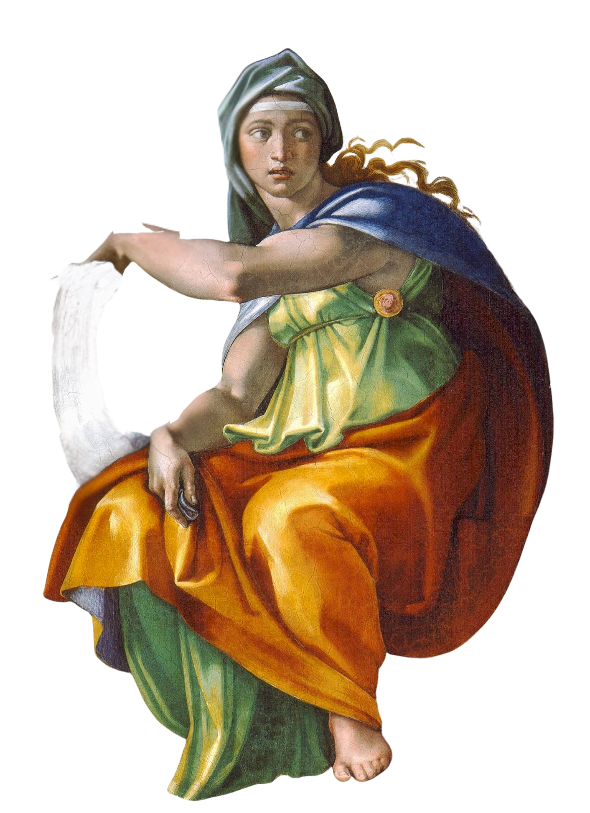
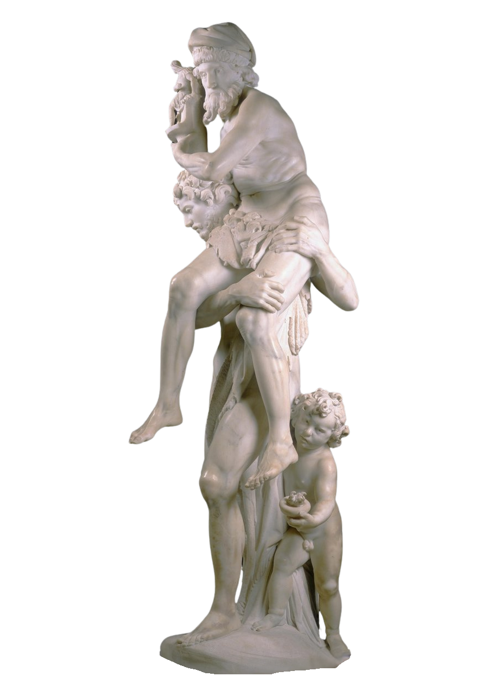

ReceptieOp deze pagina vind je complete documenten met lesmateriaal. Hierin komen vaak zowel antieke teksten als receptiebronnen aan bod. De teksten zijn voorzien van een uitgebreide introductie en vragen die zich richten op zowel tekstbegrip als (persoonlijke) interpretatie. |
 |
|
 |
Het Einde van de AeneisAuteurs: Vergilius & Jan van Foreest |